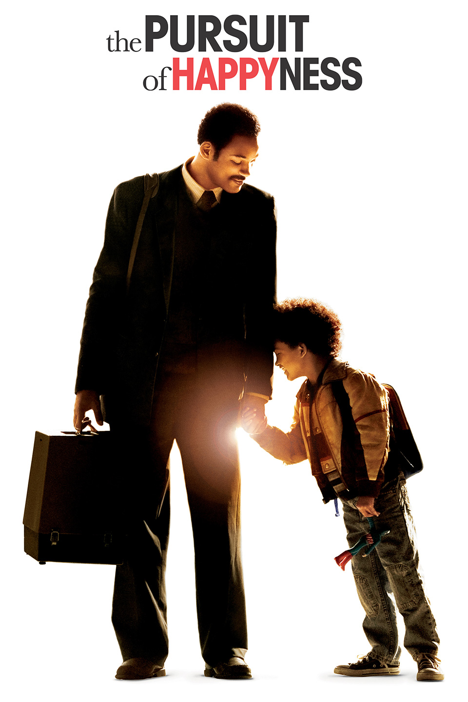
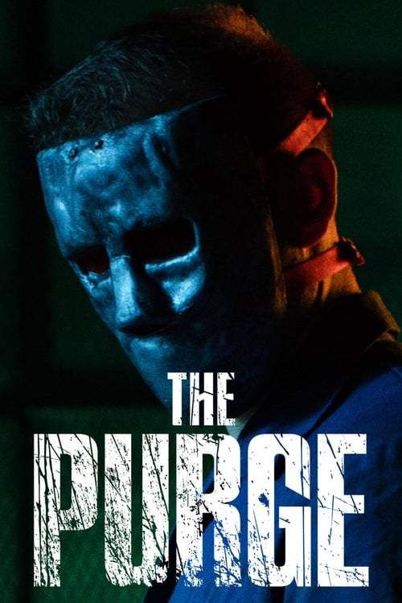
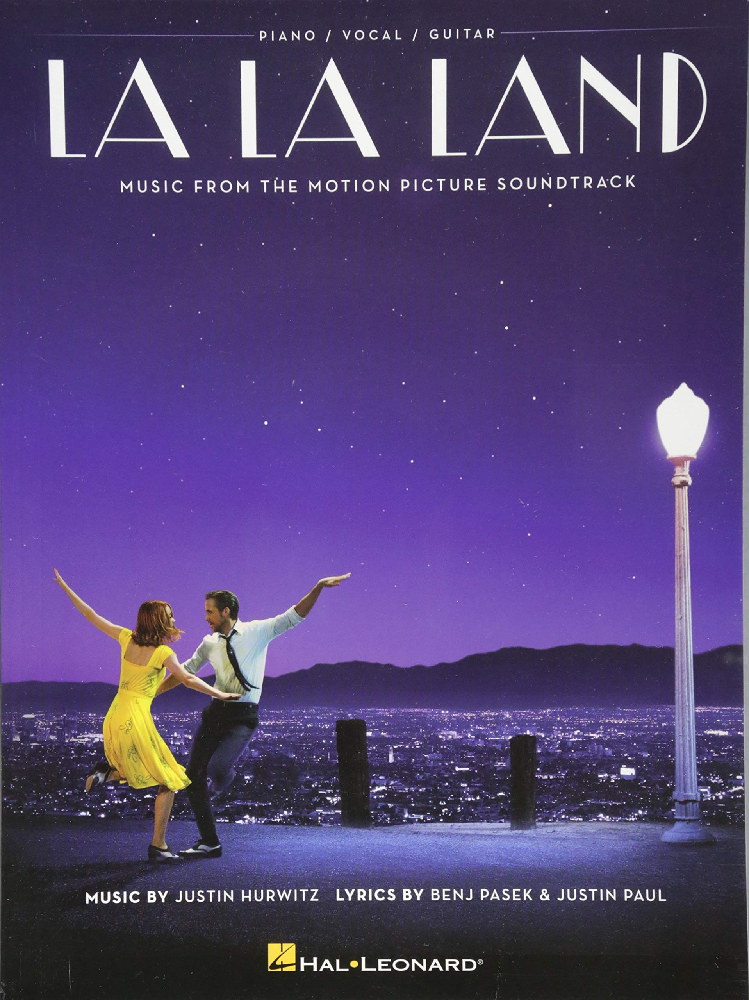

Hola, mi nombre es Rafael Arturo Zamora Aguilar, tengo 21 años de edad y actualmente estudio en la Universidad Don Bosco. Mi carrera es Ingeniería en Ciencias de la Computación y actualmente estoy cursando mi tercer año de estudio. Desde pequeño me ha gustado la informática, he sido curioso desde siempre y me gusta arreglar cosas. Soy muy autodidacta y en mi tiempo libre veo series, juego a videojuegos y realizo proyectos de programación para poder adquirir más experiencia.
Me gradué del Colegio Español Padre Arrupe de Bachillerato Técnico en Electrónica, he realizado cursos de programación en JavaScript, JQuery, ASP .NET Framework, C, C++ e hice un Bootcamp en la Academia de Programación K0D1GO especializandome en el área de Back-End. Tengo conocimientos de bases de datos relacionales y no relacionales.
| En Busca De La FelYcidad | La Purga | LaLaLand |
|---|---|---|
|  |  |  |
Montaña Rusa de las mil vueltas;
sube y baja, que sube y baja
en los corazones con mil vueltas.Misteriosa chispa que viaja,
que viaja en el sinfín
de mundos que trabajan.
Regazos ásperos,
regazos cariñosos;
balas que impactan
y que no a todos ultrajan.
Reino de la hipocresía
Reina del perdón,
¿a quién seguirás, “amada” mía,
al sincero o al que anda en callejón?Fugaz, fugaz el tiempo,
Fugaz, fugaz el perdón,
¡oh, qué triste encuentro,
entre este necio y el vencedor!Tormentas que viajan en cadena,
preguntan y preguntan
puerta por puerta,
al llegar a una abierta,
la más grande ironía despierta.Atiende al que su fin encuentra
y desdicha al que su verdad añora,
dulce muerte en esta aurora,
de sí mismo cae ahora.Detalles son los que cuido,
dentro de mi misma aurora,
mas no dicen lo que yo vivo,
sino lo que yo y apenas percibo.Fuertes choques en mi mente,
no perturban mi corazón.
Y aunque descubra mil
cosas de decir muerte,
yo tengo un fiel objetivo
en mi razón.Amar y ser amado;
mas ser amado
no es siempre amar,
quien ama y no es amado
es que ha triunfado
en su caminar. [...]